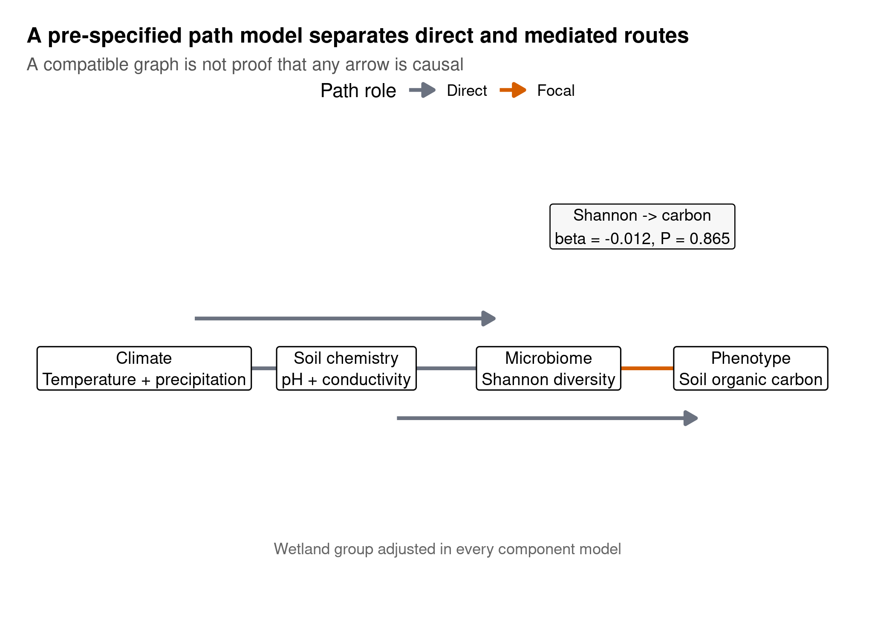
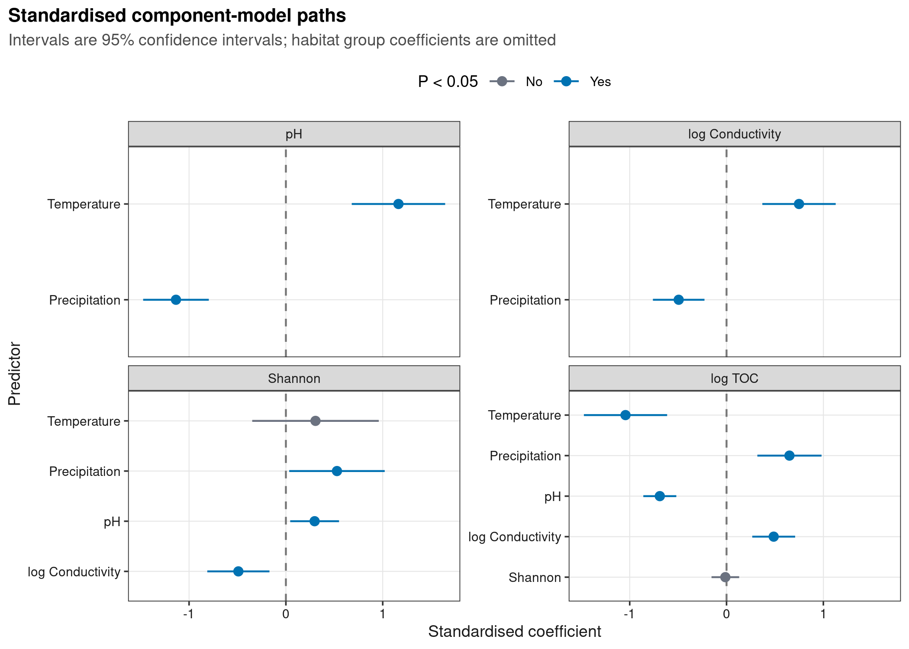
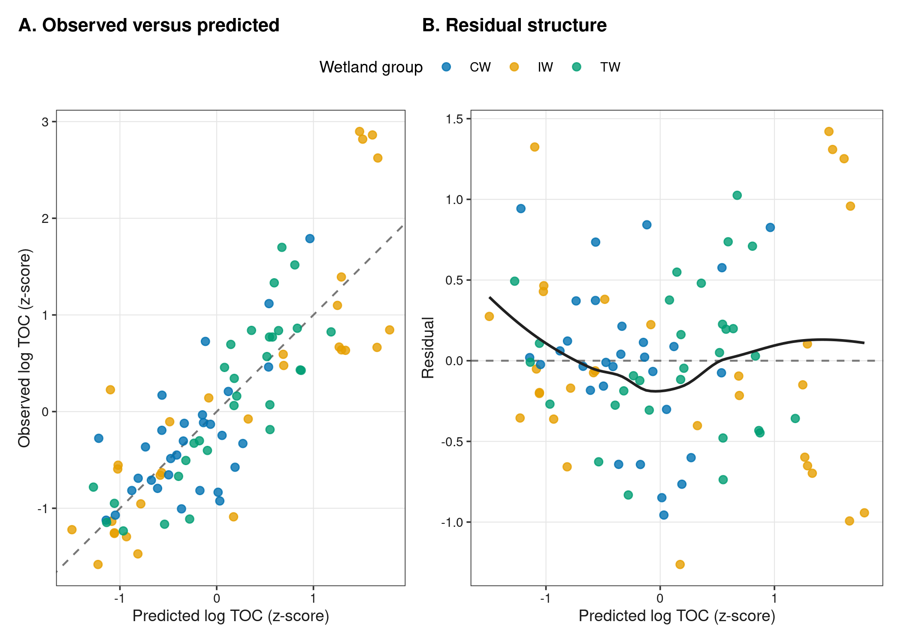
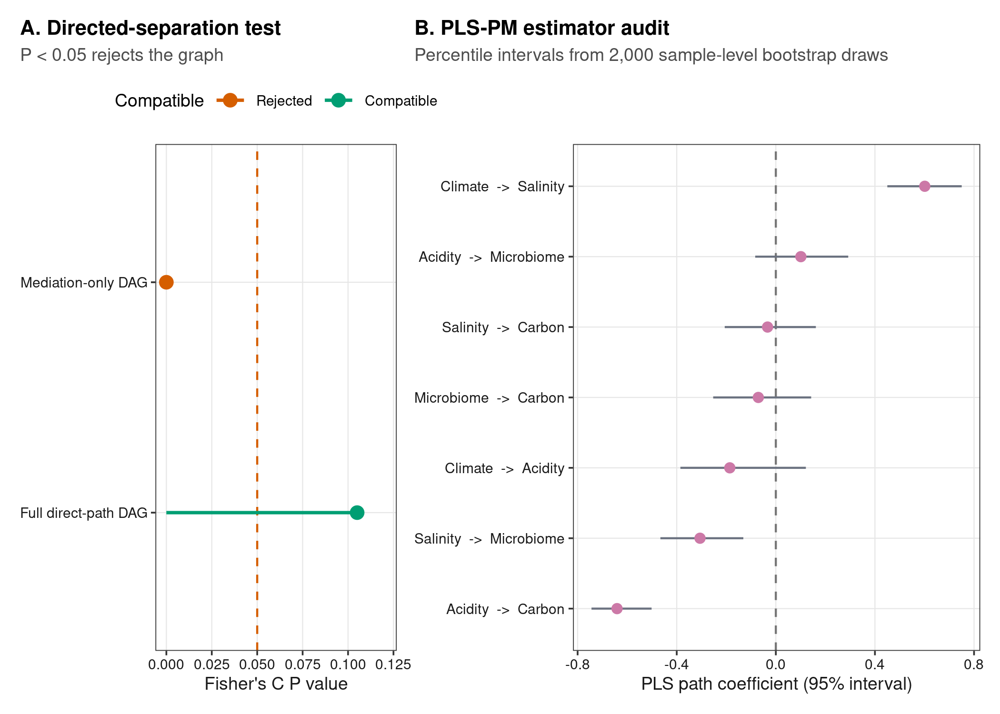

options(timeout = 600)
data_url <- "https://raw.githubusercontent.com/petemeng/microbiome-best-practices/3cb6a817e0c73ab7ecbec1cedc1ad80cbb9ecfaa/"
input_files <- c(
"data/small/environment.tsv",
"data/small/metadata.tsv",
"data/small/otutab.tsv",
"data/small/taxonomy.tsv"
)
for (path in input_files) {
dir.create(dirname(path), recursive = TRUE, showWarnings = FALSE)
if (!file.exists(path)) download.file(paste0(data_url, path), path, mode = "wb", quiet = TRUE)
}结构方程模型：从环境因子到微生物再到表型
SEM 先从可证伪的因果图开始
环境微生物组论文常见一张由方框和箭头组成的路径图：环境因子指向菌群，菌群再指向生态功能或宿主表型，箭头旁标标准化系数和 P 值。它试图同时回答：
- 哪些直接路径与数据一致？
- 环境与表型的关联是否可能经过微生物指标传递？
- 预设图遗漏的独立关系是否足以拒绝整个结构？
本例使用中国湿地土壤公开 16S 数据。原研究覆盖内陆、沿海和青藏高原湿地，并测量 pH、电导率、温度、降水和总有机碳（TOC）；microeco 以标准 OTU、分类、样本和环境表分发其中的示例。数据来源见 An et al. (2019)，软件和示例对象见 microeco 论文。
分析前先把路径结构写清楚：气候可直接影响土壤化学、Shannon 和 TOC；土壤化学可影响 Shannon 与 TOC；Shannon 可影响 TOC；湿地组别进入所有分量模型作为调整变量。
重要SEM 的合格结论是“相容”，不是“证实因果”
全局拟合未拒绝一个图，只说明该图蕴含的条件独立关系没有与当前数据明显冲突。反向箭头、共同原因、测量误差或另一张竞争图也可能得到相似拟合；横断面 SEM 不会自动创造时间顺序。
下载并读取本次分析的数据
需要 R，以及 ggplot2、patchwork、piecewiseSEM、plspm、ragg、svglite。本次使用湿地三张表及实测环境因子表；环境暴露和表型不能由菌群丰度臆造。
在一个新建的文件夹中运行以下代码，下载文件后按文中的顺序继续分析：
.libPaths(c(".r-lib", .libPaths()))
library(piecewiseSEM)
library(plspm)
library(ggplot2)
library(patchwork)
set.seed(20260752)
font_pub <- "sans"
pal_pub <- c(
blue = "#0072B2", orange = "#E69F00", green = "#009E73",
vermillion = "#D55E00", purple = "#CC79A7", sky = "#56B4E9",
yellow = "#F0E442", grey = "#6B7280"
)
scale_color_pub <- function(..., values = unname(pal_pub)) {
ggplot2::scale_color_manual(..., values = values)
}
scale_fill_pub <- function(..., values = unname(pal_pub)) {
ggplot2::scale_fill_manual(..., values = values)
}
theme_pub <- function(base_size = 10, base_family = font_pub) {
ggplot2::theme_bw(base_size = base_size, base_family = base_family) +
ggplot2::theme(
panel.grid.minor = ggplot2::element_blank(),
panel.grid.major = ggplot2::element_line(colour = "#E6E6E6", linewidth = 0.25),
axis.text = ggplot2::element_text(colour = "#1A1A1A"),
axis.title = ggplot2::element_text(colour = "#1A1A1A"),
plot.title.position = "plot",
plot.title = ggplot2::element_text(face = "bold", size = ggplot2::rel(1.15)),
plot.subtitle = ggplot2::element_text(colour = "#4D4D4D"),
legend.position = "top", legend.key = ggplot2::element_blank()
)
}
save_pub <- function(plot, file_base, width = 180, height = 120,
units = "mm", dpi = 600) {
dir.create(dirname(file_base), recursive = TRUE, showWarnings = FALSE)
ggplot2::ggsave(paste0(file_base, ".pdf"), plot, width = width,
height = height, units = units,
device = grDevices::cairo_pdf, family = font_pub, bg = "white")
ggplot2::ggsave(paste0(file_base, ".svg"), plot, width = width,
height = height, units = units, device = svglite::svglite,
bg = "white")
ggplot2::ggsave(paste0(file_base, ".png"), plot, width = width,
height = height, units = units, dpi = dpi,
device = ragg::agg_png, bg = "white")
ggplot2::ggsave(paste0(file_base, ".tiff"), plot, width = width,
height = height, units = units, dpi = dpi,
device = ragg::agg_tiff, compression = "lzw", bg = "white")
invisible(plot)
}读取三件套与实测环境/表型表
otutab <- as.matrix(read.delim(
"data/small/otutab.tsv", row.names = 1, check.names = FALSE
))
taxonomy <- read.delim(
"data/small/taxonomy.tsv", row.names = 1, check.names = FALSE
)
metadata <- read.delim(
"data/small/metadata.tsv", row.names = 1, check.names = FALSE
)
environment <- read.delim(
"data/small/environment.tsv", row.names = 1, check.names = FALSE
)
storage.mode(otutab) <- "numeric"
sample_ids <- intersect(
colnames(otutab), intersect(rownames(metadata), rownames(environment))
)
stopifnot(
identical(rownames(otutab), rownames(taxonomy)),
length(sample_ids) == 90,
all(colSums(otutab[, sample_ids, drop = FALSE]) > 0)
)
otutab <- otutab[, sample_ids, drop = FALSE]
metadata <- metadata[sample_ids, , drop = FALSE]
environment <- environment[sample_ids, , drop = FALSE]
dim(otutab)
head(taxonomy)
head(metadata)
head(environment[, c("pH", "Conductivity", "TOC", "Temperature", "Precipitation")])[1] 13628 90
Kingdom Phylum
OTU_4272 k__Bacteria p__Firmicutes
OTU_236 k__Bacteria p__Chloroflexi
OTU_399 k__Bacteria p__Proteobacteria
OTU_1556 k__Bacteria p__Acidobacteria
OTU_32 k__Archaea p__Miscellaneous Crenarchaeotic Group
OTU_706 k__Bacteria p__Actinobacteria
Class Order Family
OTU_4272 c__Bacilli o__Bacillales f__
OTU_236 c__ o__ f__
OTU_399 c__Betaproteobacteria o__Nitrosomonadales f__Nitrosomonadaceae
OTU_1556 c__Acidobacteria o__Subgroup 17 f__
OTU_32 c__ o__ f__
OTU_706 c__Actinobacteria o__Frankiales f__Nakamurellaceae
Genus Species
OTU_4272 g__ s__
OTU_236 g__ s__
OTU_399 g__ s__
OTU_1556 g__ s__
OTU_32 g__ s__
OTU_706 g__Nakamurella s__
Group Type Saline
S1 IW NE Non-saline soil
S2 IW NE Non-saline soil
S3 IW NE Non-saline soil
S4 IW NE Non-saline soil
S5 IW NE Non-saline soil
S6 IW NE Non-saline soil
pH Conductivity TOC Temperature Precipitation
S1 5.10 108.7 10.02 -4.2 445
S2 6.53 31.2 6.94 -4.3 449
S3 5.13 68.2 8.38 -4.3 449
S4 5.81 64.4 8.17 -4.3 449
S5 5.50 33.5 8.41 -4.3 449
S6 5.37 33.3 8.13 -4.3 449environment.tsv 原有 200 行，只有与三件套共同的 90 个样本进入 SEM。任何合并后的静默丢样都应打印并解释。
下载完整 R 脚本。脚本包含数据下载、计算和图形导出。
首次使用时安装 R 包
install.packages(c(
"piecewiseSEM", "plspm", "ggplot2", "patchwork", "scales",
"digest", "svglite", "ragg"
))SEM 把哪些关系放进同一个模型
传统单个回归只估计一个结局。分段 SEM 把多个回归连接起来，例如：
[ \[\begin{aligned} \mathrm{pH} &\leftarrow \mathrm{Temperature}+\mathrm{Precipitation}+\mathrm{Group},\\ \log(\mathrm{EC}) &\leftarrow \mathrm{Temperature}+\mathrm{Precipitation}+\mathrm{Group},\\ \mathrm{Shannon} &\leftarrow \mathrm{pH}+\log(\mathrm{EC})+\mathrm{Climate}+\mathrm{Group},\\ \log(\mathrm{TOC}) &\leftarrow \mathrm{Shannon}+\mathrm{pH}+\log(\mathrm{EC})+\mathrm{Climate}+\mathrm{Group}. \end{aligned}\]]
piecewiseSEM 对每个响应拟合独立模型，再用 directed separation（定向分离）检查图所蕴含的缺失路径。Fisher’s C 的小 P 值表示至少有应独立的变量仍存在条件关联，因而拒绝当前图；大 P 值不代表图唯一或为真。
深入：piecewise SEM、协方差型 SEM 与 PLS-PM 怎么选
piecewise SEM 允许每个分量使用线性模型、广义模型或混合模型，适合生态学中的层级设计和中等样本量。它的全局检验围绕图的条件独立声明。
协方差型 SEM（如 lavaan）直接拟合整体协方差结构，适合有明确潜变量测量模型且样本量足够的场景。微生物组常见的稀疏成分数据和小样本会使模型不稳定；不能用拟合指标掩盖不收敛或不识别。
PLS-PM 偏向预测和方差解释，对分布要求较弱，也可构建多指标 block；但传统全局拟合指标不能替代因果结构检验。本例只把它用作“换一种估计器，关键路径是否同方向且区间排除零”的敏感性分析。
三条建模底线
- 箭头在看数据前由理论、时间顺序和设计确定。 不从相关矩阵自动搜索一张最好看的网络。
- 调整变量不能被误叫作可干预暴露。 本例
Group控制宏观湿地差异，但不能解释成随机处理。 - 一个 alpha 指标不是“微生物组潜变量”。 Shannon 只描述多样性；若科学问题是特定功能或组成轴，应预先定义更合适且可验证的指标。
先定义路径，再拟合结构方程
构建预先声明的分析表
对偏斜的电导率和 TOC 做 log1p，再把连续变量标准化，使不同量纲的路径系数可比较。Group 用原始研究的三个英文代码 CW/IW/TW，并进入每个分量模型。
relative <- sweep(otutab, 2, colSums(otutab), "/")
shannon <- -colSums(ifelse(relative > 0, relative * log(relative), 0))
z <- function(x) as.numeric(scale(x))
sem_data <- data.frame(
SampleID = sample_ids,
Group = factor(metadata$Group, levels = c("CW", "IW", "TW")),
Shannon = shannon[sample_ids],
TOC = environment$TOC,
pH = environment$pH,
Conductivity = environment$Conductivity,
Temperature = environment$Temperature,
Precipitation = environment$Precipitation,
ShannonZ = z(shannon[sample_ids]),
TOCZ = z(log1p(environment$TOC)),
pHZ = z(environment$pH),
LogECZ = z(log1p(environment$Conductivity)),
TempZ = z(environment$Temperature),
PrecipZ = z(environment$Precipitation)
)
summary(sem_data) SampleID Group Shannon TOC pH
Length:90 CW:30 Min. :4.930 Min. : 0.270 Min. : 5.000
Class :character IW:30 1st Qu.:6.335 1st Qu.: 1.633 1st Qu.: 7.147
Mode :character TW:30 Median :6.665 Median : 3.510 Median : 8.015
Mean :6.567 Mean : 7.587 Mean : 7.785
3rd Qu.:6.873 3rd Qu.: 8.160 3rd Qu.: 8.695
Max. :7.310 Max. :67.530 Max. :10.620
Conductivity Temperature Precipitation ShannonZ
Min. : 13.10 Min. :-4.300 Min. : 39.0 Min. :-3.5995
1st Qu.: 88.28 1st Qu.: 0.700 1st Qu.: 401.0 1st Qu.:-0.5105
Median : 227.50 Median : 4.000 Median : 550.0 Median : 0.2163
Mean : 1013.42 Mean : 6.984 Mean : 660.9 Mean : 0.0000
3rd Qu.: 1629.50 3rd Qu.:12.200 3rd Qu.: 668.0 3rd Qu.: 0.6733
Max. :10800.00 Max. :24.400 Max. :1837.0 Max. : 1.6343
TOCZ pHZ LogECZ TempZ
Min. :-1.5815 Min. :-2.1025 Min. :-1.9056 Min. :-1.2012
1st Qu.:-0.7632 1st Qu.:-0.4813 1st Qu.:-0.7654 1st Qu.:-0.6690
Median :-0.1585 Median : 0.1735 Median :-0.1843 Median :-0.3177
Mean : 0.0000 Mean : 0.0000 Mean : 0.0000 Mean : 0.0000
3rd Qu.: 0.6376 3rd Qu.: 0.6869 3rd Qu.: 1.0298 3rd Qu.: 0.5552
Max. : 2.8978 Max. : 2.1400 Max. : 2.1985 Max. : 1.8539
PrecipZ
Min. :-1.3665
1st Qu.:-0.5710
Median :-0.2436
Mean : 0.0000
3rd Qu.: 0.0157
Max. : 2.5845 拟合完整的分段 SEM
公式就是 DAG 的可执行版本。每条没写入公式的路径都隐含一个条件独立声明，因此不能拟合后再偷偷补箭头而不把它标为探索性分析。
main_models <- list(
acidity = lm(pHZ ~ TempZ + PrecipZ + Group, data = sem_data),
salinity = lm(LogECZ ~ TempZ + PrecipZ + Group, data = sem_data),
microbiome = lm(
ShannonZ ~ pHZ + LogECZ + TempZ + PrecipZ + Group,
data = sem_data
),
carbon = lm(
TOCZ ~ ShannonZ + pHZ + LogECZ + TempZ + PrecipZ + Group,
data = sem_data
)
)
sem_main <- piecewiseSEM::psem(
main_models$acidity,
main_models$salinity,
main_models$microbiome,
main_models$carbon,
data = sem_data
)
piecewiseSEM::fisherC(sem_main)
piecewiseSEM::dSep(sem_main)
piecewiseSEM::coefs(sem_main) Fisher.C df P.Value
1 4.514 2 0.105
|
| | 0%
|
|======================================================================| 100%
Independ.Claim Test.Type DF Crit.Value P.Value
1 LogECZ ~ pHZ + ... coef 84 1.640417 0.1046582
Response Predictor Estimate Std.Error DF Crit.Value P.Value Std.Estimate
1 pHZ TempZ 1.1626 0.2426 85 4.7913 0.0000 -
2 pHZ PrecipZ -1.1352 0.1705 85 -6.6580 0.0000 -
3 pHZ Group - - 2 2.1115 0.1274 -
4 pHZ Group = CW -0.3428 0.2675 85 -1.2815 0.2035 -
5 pHZ Group = IW 0.0469 0.2109 85 0.2223 0.8246 -
6 pHZ Group = TW 0.296 0.1652 85 1.7914 0.0768 -
7 LogECZ TempZ 0.7486 0.1906 85 3.9283 0.0002 -
8 LogECZ PrecipZ -0.4941 0.1339 85 -3.6896 0.0004 -
9 LogECZ Group - - 2 5.3339 0.0066 -
10 LogECZ Group = IW -0.4963 0.1656 85 -2.9964 0.0036 -
11 LogECZ Group = TW -0.0833 0.1298 85 -0.6422 0.5225 -
12 LogECZ Group = CW 0.5796 0.2101 85 2.7586 0.0071 -
13 ShannonZ pHZ 0.2967 0.1268 83 2.3404 0.0217 -
14 ShannonZ LogECZ -0.4908 0.1614 83 -3.0409 0.0032 -
15 ShannonZ TempZ 0.3057 0.3286 83 0.9305 0.3548 -
16 ShannonZ PrecipZ 0.5275 0.248 83 2.1270 0.0364 -
17 ShannonZ Group - - 2 2.1793 0.1196 -
18 ShannonZ Group = CW -0.6408 0.3268 83 -1.9607 0.0533 -
19 ShannonZ Group = TW 0.284 0.1947 83 1.4591 0.1483 -
20 ShannonZ Group = IW 0.3567 0.2559 83 1.3940 0.1670 -
21 TOCZ ShannonZ -0.0123 0.0718 82 -0.1710 0.8647 -
22 TOCZ pHZ -0.6891 0.0856 82 -8.0465 0.0000 -
23 TOCZ LogECZ 0.4871 0.1113 82 4.3751 0.0000 -
24 TOCZ TempZ -1.0433 0.2161 82 -4.8280 0.0000 -
25 TOCZ PrecipZ 0.6498 0.1666 82 3.8998 0.0002 -
26 TOCZ Group - - 2 11.5455 0.0000 -
27 TOCZ Group = CW -0.2661 0.2187 82 -1.2169 0.2271 -
28 TOCZ Group = IW -0.221 0.1694 82 -1.3051 0.1955 -
29 TOCZ Group = TW 0.4872 0.129 82 3.7772 0.0003 -
1 ***
2 ***
3
4
5
6
7 ***
8 ***
9 **
10 **
11
12 **
13 *
14 **
15
16 *
17
18
19
20
21
22 ***
23 ***
24 ***
25 ***
26 ***
27
28
29 ***完整图的 Fisher’s C = 4.514，df = 2，P = 0.105：当前数据没有拒绝图蕴含的条件独立结构。关键的 Shannon → log TOC 标准化系数为 −0.012（95% CI −0.155 至 0.131，P = 0.865），没有支持微生物多样性与 TOC 的直接路径。
提取标准化路径并重绘 DAG
extract_paths <- function(model, response, model_name) {
x <- summary(model)$coefficients
x <- x[!grepl("^\\(Intercept\\)$|^Group", rownames(x)), , drop = FALSE]
critical <- qt(0.975, df = df.residual(model))
data.frame(
Model = model_name, Response = response, Predictor = rownames(x),
Estimate = x[, "Estimate"],
Lower = x[, "Estimate"] - critical * x[, "Std. Error"],
Upper = x[, "Estimate"] + critical * x[, "Std. Error"],
PValue = x[, "Pr(>|t|)"], row.names = NULL
)
}
main_paths <- do.call(rbind, list(
extract_paths(main_models$acidity, "pH", "Full direct-path DAG"),
extract_paths(main_models$salinity, "log Conductivity", "Full direct-path DAG"),
extract_paths(main_models$microbiome, "Shannon", "Full direct-path DAG"),
extract_paths(main_models$carbon, "log TOC", "Full direct-path DAG")
))
microbe_carbon <- main_paths[
main_paths$Response == "log TOC" & main_paths$Predictor == "ShannonZ", ]
nodes <- data.frame(
X = c(0, 1.4, 2.8, 4.2), Y = 1.15,
Label = c(
"Climate\nTemperature + precipitation",
"Soil chemistry\npH + conductivity",
"Microbiome\nShannon diversity",
"Phenotype\nSoil organic carbon"
)
)
edges <- data.frame(
X = c(0.38, 0.35, 1.78, 1.75, 3.18),
XEnd = c(1.02, 2.42, 2.42, 3.82, 3.82),
Y = c(1.15, 1.28, 1.15, 1.02, 1.15),
YEnd = c(1.15, 1.28, 1.15, 1.02, 1.15),
Type = c("Direct", "Direct", "Direct", "Direct", "Focal")
)
p_dag <- ggplot() +
geom_segment(
data = edges, aes(X, Y, xend = XEnd, yend = YEnd, colour = Type),
linewidth = 1,
arrow = grid::arrow(length = grid::unit(2.4, "mm"), type = "closed")
) +
geom_label(
data = nodes, aes(X, Y, label = Label), size = 3.3,
lineheight = 1.05, label.size = 0.35, fill = "white"
) +
annotate(
"label", x = 3.45, y = 1.52,
label = sprintf("Shannon -> carbon\nbeta = %.3f, P = %.3f",
microbe_carbon$Estimate, microbe_carbon$PValue),
size = 3.2, fill = "#F7F7F7", label.size = 0.3
) +
annotate(
"text", x = 2.1, y = 0.68,
label = "Wetland group adjusted in every component model",
colour = "#666666", size = 3.1
) +
scale_colour_manual(values = c(
Direct = pal_pub[["grey"]], Focal = pal_pub[["vermillion"]]
)) +
coord_cartesian(xlim = c(-0.55, 4.75), ylim = c(0.55, 1.75), clip = "off") +
labs(
title = "A pre-specified path model separates direct and mediated routes",
subtitle = "A compatible graph is not proof that any arrow is causal",
colour = "Path role"
) +
theme_void(base_family = font_pub) +
theme(
legend.position = "top", plot.title = element_text(face = "bold", size = 12),
plot.subtitle = element_text(colour = "#555555", size = 10),
plot.margin = margin(10, 15, 10, 15)
)
p_dag
save_pub(p_dag, "figures/52-structural-equation-model/52-1-prespecified-dag",
height = 100)画完整路径系数
plot_paths <- main_paths
plot_paths$Response <- factor(
plot_paths$Response,
levels = c("pH", "log Conductivity", "Shannon", "log TOC")
)
plot_paths$PredictorLabel <- factor(
plot_paths$Predictor,
levels = rev(c("TempZ", "PrecipZ", "pHZ", "LogECZ", "ShannonZ")),
labels = rev(c("Temperature", "Precipitation", "pH", "log Conductivity", "Shannon"))
)
p_paths <- ggplot(plot_paths, aes(Estimate, PredictorLabel, colour = PValue < 0.05)) +
geom_vline(xintercept = 0, linetype = 2, colour = "#777777") +
geom_errorbarh(aes(xmin = Lower, xmax = Upper), height = 0) +
geom_point(size = 2) +
facet_wrap(~ Response, scales = "free_y", ncol = 2) +
scale_colour_manual(
values = c(`FALSE` = pal_pub[["grey"]], `TRUE` = pal_pub[["blue"]]),
labels = c(`FALSE` = "No", `TRUE` = "Yes")
) +
labs(
title = "Standardised component-model paths",
subtitle = "Intervals are 95% confidence intervals; habitat group coefficients are omitted",
x = "Standardised coefficient", y = "Predictor", colour = "P < 0.05"
) + theme_pub(9)
p_paths
save_pub(p_paths, "figures/52-structural-equation-model/52-2-path-coefficients",
height = 135)拟合良好不等于因果图正确
用竞争图检验“完全中介”的强假设
一个常见但过强的写法是删掉气候到 Shannon 和 TOC 的直接路径，暗示所有作用只能经过 pH/电导率。把这个“中介限定图”明确拟合，而不是从不显著路径倒推出完全中介：
reduced_models <- list(
acidity = main_models$acidity,
salinity = main_models$salinity,
microbiome = lm(ShannonZ ~ pHZ + LogECZ + Group, data = sem_data),
carbon = lm(TOCZ ~ ShannonZ + pHZ + LogECZ + Group, data = sem_data)
)
sem_reduced <- piecewiseSEM::psem(
reduced_models$acidity, reduced_models$salinity,
reduced_models$microbiome, reduced_models$carbon,
data = sem_data
)
fit_row <- function(model, label) {
f <- piecewiseSEM::fisherC(model)
a <- AIC(model)
data.frame(
Model = label, FisherC = f$Fisher.C, DF = f$df, PValue = f$P.Value,
AIC = a$AIC, Parameters = a$K, Samples = a$n
)
}
sem_fit <- rbind(
fit_row(sem_main, "Full direct-path DAG"),
fit_row(sem_reduced, "Mediation-only DAG")
)
sem_fit Model FisherC DF PValue AIC Parameters Samples
1 Full direct-path DAG 4.514 2 0.105 794.226 29 90
2 Mediation-only DAG 51.796 10 0.000 828.137 25 90中介限定图 Fisher’s C = 51.796，df = 10，P < 0.001，被数据明确拒绝。这个结果不是说完整图“被证明”，而是说明删掉气候直接路径后留下了明显未解释关系。
PLS-PM 作为估计器敏感性分析
inner <- matrix(
0, 5, 5,
dimnames = list(
c("Climate", "Acidity", "Salinity", "Microbiome", "Carbon"),
c("Climate", "Acidity", "Salinity", "Microbiome", "Carbon")
)
)
inner["Acidity", "Climate"] <- 1
inner["Salinity", "Climate"] <- 1
inner["Microbiome", c("Acidity", "Salinity")] <- 1
inner["Carbon", c("Acidity", "Salinity", "Microbiome")] <- 1
blocks <- list(c("TempZ", "PrecipZ"), "pHZ", "LogECZ", "ShannonZ", "TOCZ")
set.seed(20260752)
pls_fit <- plspm::plspm(
sem_data, inner, blocks,
modes = rep("A", 5), scaled = FALSE,
boot.val = TRUE, br = 2000
)
pls_paths <- data.frame(
Path = rownames(pls_fit$boot$paths),
Estimate = pls_fit$boot$paths[, "Original"],
Lower = pls_fit$boot$paths[, "perc.025"],
Upper = pls_fit$boot$paths[, "perc.975"],
row.names = NULL
)
pls_fit$gof
pls_paths[1] 0.4597259
Path Estimate Lower Upper
1 Climate -> Acidity -0.18581622 -0.38520556 0.1212176
2 Climate -> Salinity 0.60109277 0.44995841 0.7502763
3 Acidity -> Microbiome 0.10097202 -0.08322429 0.2921690
4 Acidity -> Carbon -0.64088475 -0.74396618 -0.5014294
5 Salinity -> Microbiome -0.30598136 -0.46594354 -0.1311716
6 Salinity -> Carbon -0.03340378 -0.20625616 0.1615331
7 Microbiome -> Carbon -0.07065033 -0.25286504 0.1426278PLS-PM 的 GOF 为 0.460，但它不能把箭头升级为因果。更值得看的是路径区间：Microbiome → Carbon 估计 −0.071，95% bootstrap 区间 −0.253 至 0.143，仍跨过零，与分段 SEM 的空结果一致。
残差与全局结构一起看
sem_data$PredictedTOCZ <- predict(main_models$carbon)
sem_data$ResidualTOCZ <- residuals(main_models$carbon)
group_colours <- c(
CW = pal_pub[["blue"]], IW = pal_pub[["orange"]], TW = pal_pub[["green"]]
)
p_diag_a <- ggplot(sem_data, aes(PredictedTOCZ, TOCZ, colour = Group)) +
geom_abline(slope = 1, intercept = 0, linetype = 2, colour = "#777777") +
geom_point(size = 1.8, alpha = 0.8) +
scale_colour_manual(values = group_colours) +
labs(
title = "A. Observed versus predicted",
x = "Predicted log TOC (z-score)", y = "Observed log TOC (z-score)",
colour = "Wetland group"
) + coord_equal() + theme_pub(9)
p_diag_b <- ggplot(sem_data, aes(PredictedTOCZ, ResidualTOCZ, colour = Group)) +
geom_hline(yintercept = 0, linetype = 2, colour = "#777777") +
geom_point(size = 1.8, alpha = 0.8) +
geom_smooth(
inherit.aes = FALSE,
aes(x = PredictedTOCZ, y = ResidualTOCZ),
method = "loess", se = FALSE, colour = "#202020", linewidth = 0.7
) +
scale_colour_manual(values = group_colours) +
labs(
title = "B. Residual structure",
x = "Predicted log TOC (z-score)", y = "Residual",
colour = "Wetland group"
) + theme_pub(9)
p_diagnostics <- p_diag_a + p_diag_b + patchwork::plot_layout(guides = "collect") &
theme(legend.position = "top")
p_diagnostics
save_pub(p_diagnostics,
"figures/52-structural-equation-model/52-3-model-diagnostics",
height = 110)sem_fit$Compatible <- sem_fit$PValue >= 0.05
p_fit <- ggplot(sem_fit, aes(PValue, Model, colour = Compatible)) +
geom_vline(xintercept = 0.05, linetype = 2, colour = pal_pub[["vermillion"]]) +
geom_segment(aes(x = 0, xend = PValue, yend = Model), linewidth = 0.8) +
geom_point(size = 2.8) +
scale_x_continuous(limits = c(0, max(0.12, sem_fit$PValue * 1.15))) +
scale_colour_manual(
values = c(`FALSE` = pal_pub[["vermillion"]], `TRUE` = pal_pub[["green"]]),
labels = c(`FALSE` = "Rejected", `TRUE` = "Compatible")
) +
labs(
title = "A. Directed-separation test", subtitle = "P < 0.05 rejects the graph",
x = "Fisher's C P value", y = NULL, colour = "Compatible"
) + theme_pub(9)
pls_paths$PathLabel <- gsub(" -> ", " -> ", pls_paths$Path, fixed = TRUE)
p_pls <- ggplot(pls_paths, aes(Estimate, reorder(PathLabel, Estimate))) +
geom_vline(xintercept = 0, linetype = 2, colour = "#777777") +
geom_errorbarh(aes(xmin = Lower, xmax = Upper), height = 0,
colour = pal_pub[["grey"]]) +
geom_point(size = 2, colour = pal_pub[["purple"]]) +
labs(
title = "B. PLS-PM estimator audit",
subtitle = "Percentile intervals from 2,000 sample-level bootstrap draws",
x = "PLS path coefficient (95% interval)", y = NULL
) + theme_pub(9)
p_audit <- p_fit + p_pls + patchwork::plot_layout(widths = c(0.8, 1.35))
p_audit
save_pub(p_audit, "figures/52-structural-equation-model/52-4-model-audit",
height = 120)今天还应补哪些验证
- 用采样时间、空间层级或研究中心构建混合分量模型，避免伪重复；
- 对竞争 DAG 做预先定义的比较，而不是用显著性逐条删边；
- 对环境变量的测量误差、非线性、交互和共线性做诊断；
- 若以特定菌或功能作为中介，先解决成分性、零值、多重检验和测量可靠性；
- 对关键箭头寻找时间滞后、干预或外部数据证据，形成独立于同一横断面协方差的验证。
注意常见坑：一张漂亮路径图可能隐藏什么
- 箭头方向来自作图者，不来自横断面数据；
- “路径不显著”不等于该路径不存在，“全局 P > 0.05”也不等于模型正确；
- 拟合后按 P 值删边会造成选择偏倚，使最终系数和拟合指标过于乐观；
- 把多个菌先按结果筛选，再塞进同一个 SEM，会把特征选择的不确定性完全丢掉；
Group、批次和空间位置若同时代表多种差异，调整它们不能恢复一个不存在的随机实验。
检查路径、拟合与替代解释
路径图应把“科学结构”和“统计结果”分开：节点写变量含义，箭头颜色只区分焦点路径与其余直接路径；完整数值放系数森林图。每个箭头都塞系数、P 值和星号会让读者看不到结构，也容易只注意显著路径。
推荐正文组合为：预设 DAG + 全部标准化系数；补充材料放 directed-separation 表、竞争图比较、残差诊断和 PLS-PM bootstrap。save_pub() 输出 PDF/SVG 与 600 ppi PNG/TIFF，所有图内文字为英文。
报告结构方程的假设与拟合的方法与限制
We evaluated a pre-specified causal graph using piecewise structural equation modelling. Measured temperature and precipitation were modelled as upstream climatic predictors; soil pH and log-transformed conductivity represented soil chemistry; Shannon diversity represented the microbial community; and log-transformed total organic carbon was the measured phenotype. Continuous variables were standardised before analysis, and wetland group was included as an adjustment factor in every component model. Global graph compatibility was assessed using tests of directed separation and Fisher’s C. Standardised component-model coefficients with 95% confidence intervals were reported. A more restrictive mediation-only graph was evaluated as a falsification model. Partial least-squares path modelling with 2,000 fixed-seed bootstrap resamples was used as an estimator-family sensitivity analysis. Graph compatibility was not interpreted as proof of causality.
请把变量的实测方法、取样时间、预设图依据、变换、层级结构、缺失处理、bootstrap 次数和软件版本替换为真实信息。若 DAG 在看结果后修改，应把修改过程与最终模型标为探索性。
将结构方程的假设与拟合用于自己的研究
除三件套外，必须准备一张以 SampleID 为行名的实测表：
| 必需信息 | 本例列名 | 你的数据 |
|---|---|---|
| 上游环境/暴露 | Temperature, Precipitation |
饮食、药物、污染物或环境梯度 |
| 中间环境变量 | pH, Conductivity |
代谢物、炎症或局部理化指标 |
| 微生物指标 | 从 otutab 算 Shannon |
预先定义的多样性、组成轴或功能 |
| 表型/结局 | TOC |
临床或生态结局 |
| 调整变量 | Group |
年龄、中心、空间区组等 |
先在纸上画 DAG，再把每个入箭头集合翻译成一个分量公式。变量缺失、时间顺序不明确或测量并非逐样本对应时，不要靠代码补齐；应重新界定问题或补数据。
参考
- An J, et al. A large-scale survey of soil bacterial communities across Chinese wetlands. Geoderma. 2019;337:841–850. doi:10.1016/j.geoderma.2018.09.035
- Liu C, et al. microeco: an R package for data mining in microbial community ecology. FEMS Microbiology Ecology. 2021;97:fiaa255. doi:10.1093/femsec/fiaa255
- Lefcheck JS. piecewiseSEM: Piecewise structural equation modelling in R for ecology, evolution, and systematics. Methods in Ecology and Evolution. 2016;7:573–579. doi:10.1111/2041-210X.12512
- Sanchez G. PLS Path Modeling with R. Trowchez Editions; 2013.
- Shipley B. The AIC model selection method applied to path analytic models compared using a d-separation test. Ecology. 2013;94:560–564. doi:10.1890/12-0976.1